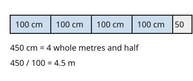

Part of Metric Conversions. Answer in the chat (1: ..., g: c), add sure or guess after any answer, and say done when finished.
Last time: how many metres are in 450 cm? You said b) 4.5, and it is.

Going the other way, the bigger unit swallows many small ones, so you need fewer of them. Divide by how many small units fit in one big one (notes 4): 450 cm / 100 = 4.5 m.
Q1. How many metres are in 2600 mm?
2.6
Right: 2600 / 1000 = 2.6 (notes 1, 4).
Q2. How many centimetres are in 85 mm?
8.5 (sure)
Right: 10 mm make a cm, so 85 / 10 = 8.5 (notes 1, 4).
Q3. Lu says to change 500 m to km you multiply by 1000, since a km has 1000 m. What is wrong?
a km is the bigger unit, so you need fewer of them. Divide: 500 / 1000 = 0.5 km
Right: to a bigger unit, divide (notes 4).
You can now change to a bigger unit.
How many milligrams are in 1 gram?
b (sure)